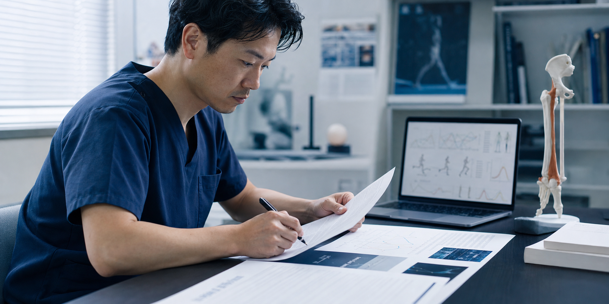
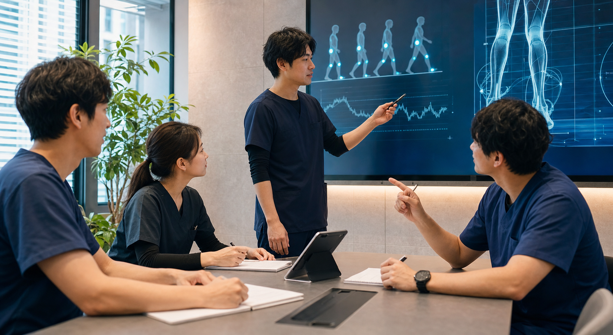

01EVIDENCEINTOPRACTICEFOR GAIT RECONSTRUCTION
EVIDENCEINTOPRACTICE
歩行を、
もう一度よく見る。
SCROLL
MISSION
Our mission
REBUILD
CLINICAL
DECISIONS目の前の歩行から、考え直す。
EVIDENCE
×
PRACTICE
×
PRACTICE
論文で得た知識を、
目の前の歩行にどうつなぐか。
Rewalk Scienceは、歩行に関わる医療専門職のための学びの場です。研究を読み、症例について話し、自分の見方を確かめる。その往復を、日々の評価や介入につなげます。
PROGRAMS
What we provide
PROGRAMS
02

03METHOD
Our method
EVIDENCE × PRACTICE研究と臨床を、行ったり来たりする。
EVIDENCE
歩行分析や疾患、介入に関する研究を、臨床で生まれた問いと一緒に読みます。
THE
POINT OF
CONTACT
POINT OF
CONTACT
PRACTICE
観察し、考え、試し、もう一度見る。普段は言葉になりにくい判断を、丁寧に確かめます。
COMMUNITY
Our community
LEARN.
THINK.
REBUILD.自分の見方を、少しずつ育てたい人へ。
1,200+累計参加者数
4.8平均満足度 / 5
3プログラム
PT/OT/ST対象職種
「評価の視点が整理され、歩行をどう見ているのか説明しやすくなりました。」
理学療法士 / 10年目「研究知見を、臨床の判断にどうつなげるかが見えやすくなります。」
作業療法士 / 7年目「介入だけでなく、説明や環境調整まで含めて考えられるのが強みです。」
言語聴覚士 / 12年目Next step
NEXT
DECISION次の目の前の歩行から、考え直す。
見る
→